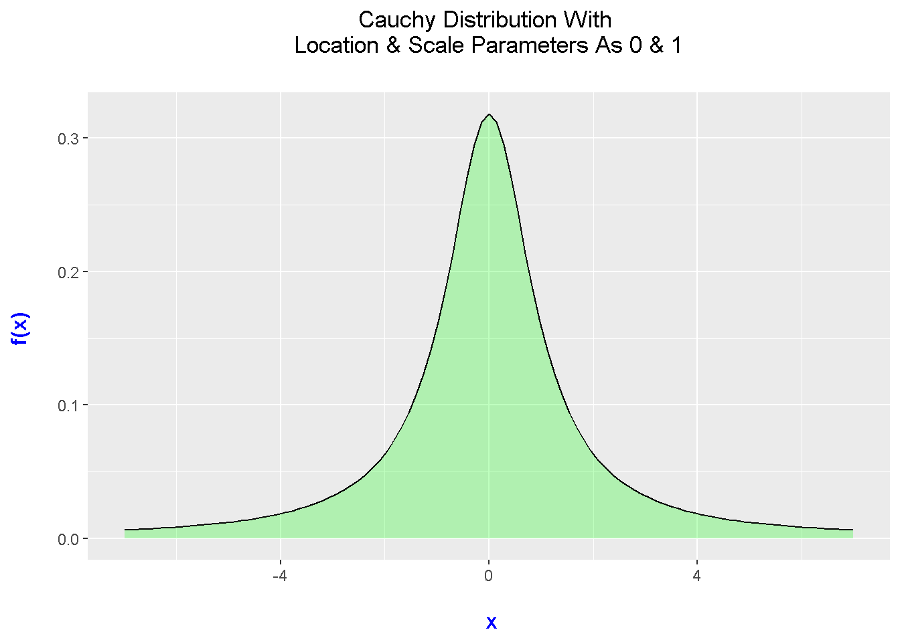
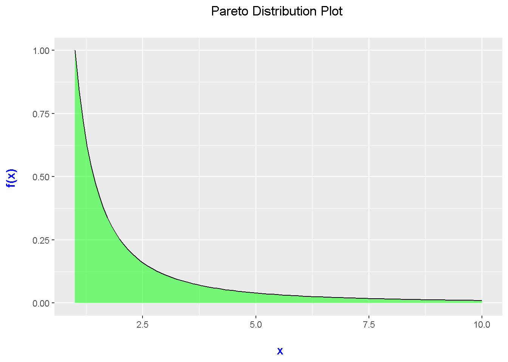
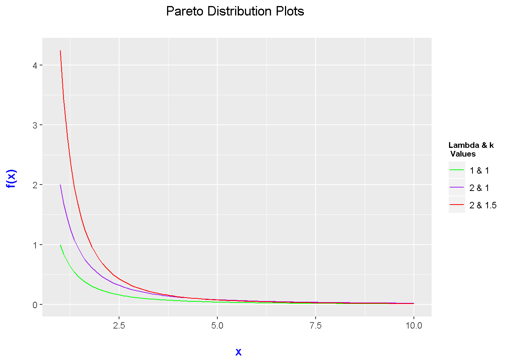

Plotting Continuous Probability Distributions In R With ggplot2
Hello there. This page is about plotting various (continuous) probability distributions in R with ggplot2. Through experimentation and trial and error, here is what I have come with. As there are many different probability distributions, I will go through a sample of them.
To install the ggplot2 package into R, try typing in:
install.packages("ggplot2")
To load in the ggplot2 package into R, type in
library(ggplot2)
Most of the R & ggplot2 code in the below sections will have a format similar to:
# Main Code Template:
# ggplot(x = data.frame(c(a, b)), aes(x = x))
# + stat_function(fun = function_name) +
# other add-on functions such as labels, text and so on.
Sections
- Standard Uniform Distribution
- Exponential Distribution
- Weibull Distribution
- Gamma Distribution
- Cauchy Distribution
- Pareto Distribution Plots With Custom Function
- Notes
- References
You may want to refer to a few of my other pages:
Plotting Normal Distributions In R Using ggplot2
Plotting Uniform Distributions In R With ggplot2
Standard Uniform Distribution
Given values of \(a\) and \(b\), the random variable \(U\) follows a uniform distribution with a probability density function (pdf) of:
\[f(u) = \dfrac{1}{b - a}\]
for \(a \leq u \leq b\).
If \(a = 0\) and \(b = 1\), the uniform distribution becomes the standard uniform distribution. We would now have
\[f(u) = 1\]
for \(0 \leq x \leq 1\).
R Code
In R, the code for the uniform density function is:
dunif(x, min = 0, max = 1, log = FALSE)
where we have \(x\), min which is like \(a\) and max which is like \(b\). (I am not sure what log is for but I would leave it at the FALSE default.)
The code presented below starts with the ggplot() function taking in 0 and 1 as limits for the horizontal axis. The xlim() and ylim() optional functions are used to adjust to the \(a\) and \(b\) parameters. Two stat_functions() are used for the colour fill to represent the area and for the probability density line. Add-on functions such as labs() and theme() are for labels and adjusting text.
## 1) Standard Uniform Distribution Plot [Unif(0, 1)]
# Template Code from R Doc. : dunif(x, min = 0, max = 1, log = FALSE)
a <- 0; b <- 1
ggplot(data.frame(x = c(a, b)), aes(x = x)) + xlim(c(a, b)) + ylim(0, 1/(b - a)) +
stat_function(fun = dunif, args = list(min = a, max = b), geom = "area", fill = "purple", alpha = 0.35) +
stat_function(fun = dunif, args = list(min = a, max = b)) +
labs(x = "\n u", y = "f(u) \n", title = "Standard Uniform Distribution Density Plot \n") +
theme(plot.title = element_text(hjust = 0.5),
axis.title.x = element_text(face="bold", colour="blue", size = 12),
axis.title.y = element_text(face="bold", colour="blue", size = 12))
Inside stat_function, it is important to include args = list(). Inside this list(), you input the parameters/values for the function that you are using. In this case, the uniform distribution function dunif() requires a minimum and a maximum.
Exponential Distribution Plot
Given a rate of \(\lambda\) (lambda), the probability density function for the exponential distribution is:
\[f(x; \lambda) = \lambda \text{e}^{-\lambda x}\]
for \(x \geq 0\).
In the R documentation, the code for the exponential distribution’s density function is:
dexp(x, rate = 1, log = FALSE)
This first plot deals with the case when the rate/lambda is equal to 1 in the exponential distribution.
## 2) Exponential Distribution Plot:
# Template Code in R Doc.: dexp(x, rate = 1, log = FALSE)
# Mean is 1/rate
# Initialize some values.
x_lower <- 0
x_upper <- 5
max_height <- max(dexp(x_lower:x_upper, rate = 1, log = FALSE))
max_height## [1] 1ggplot(data.frame(x = c(x_lower, x_upper)), aes(x = x)) + xlim(x_lower, x_upper) +
ylim(0, max_height) +
stat_function(fun = dexp, args = list(rate = 1), geom = "area", fill = "blue", alpha = 0.25) +
stat_function(fun = dexp, args = list(rate = 1)) +
labs(x = "\n x", y = "f(x) \n", title = "Exponential Distribution Density Plot With Rate = 1 \n") +
theme(plot.title = element_text(hjust = 0.5),
axis.title.x = element_text(face="bold", colour="blue", size = 12),
axis.title.y = element_text(face="bold", colour="blue", size = 12))
This plot is expected when \(\lambda = 1\) as this is simply exponential decay (i.e. \(\text{e}^{-x}\)).
Plotting Multiple Exponential Distribution Plots
Suppose you want to compare multiple exponential distribution plots with different rates. This can be done in the ggplot2 framework with the use of multiple stat_functions with different rate values in each of the list() functions for args = list().
# Multiple Exponential Distribution Plots:
x_lower <- 0
x_upper <- 5
max_height2 <- max(dexp(x_lower:x_upper, rate = 1, log = FALSE),
dexp(x_lower:x_upper, rate = 2, log = FALSE),
dexp(x_lower:x_upper, rate = 3, log = FALSE),
dexp(x_lower:x_upper, rate = 0.5, log = FALSE))
max_height2## [1] 3ggplot(data.frame(x = c(x_lower, x_upper)), aes(x = x)) + xlim(x_lower, x_upper) +
ylim(0, max_height2) +
stat_function(fun = dexp, args = list(rate = 0.5), aes(colour = "0.5")) +
stat_function(fun = dexp, args = list(rate = 1), aes(colour = "1")) +
stat_function(fun = dexp, args = list(rate = 2), aes(colour = "2")) +
stat_function(fun = dexp, args = list(rate = 3), aes(colour = "3")) +
scale_color_manual("Rate", values = c("blue", "green", "red", "purple")) +
labs(x = "\n x", y = "f(x) \n",
title = "Exponential Distribution Density Plots \n") +
theme(plot.title = element_text(hjust = 0.5),
axis.title.x = element_text(face="bold", colour="blue", size = 12),
axis.title.y = element_text(face="bold", colour="blue", size = 12),
legend.title = element_text(face="bold", size = 10),
legend.position = "right")
# https://stackoverflow.com/questions/31792634/adding-legend-to-ggplot2-with-multiple-lines-on-plot
# https://stackoverflow.com/questions/19950219/using-legend-with-stat-function-in-ggplot2
Weibull Distribution
The Weibull distribution depends on shape and scale parameters. A special case of the Weibull distribution is the Exponential distribution where the shape parameter from the Weibull is one.
In R, the code for the Weibull density function is:
dweibull(x, shape, scale = 1, log = FALSE)
The code for Weibull distribution plot is very similar to the code for the first Exponential distribution plot above. Instead of dexp(), it would be dweibull() instead. Do note the changes in the args = list() parts in two stat_function() parts.
# R Doc. Template for Weibull: dweibull(x, shape, scale = 1, log = FALSE)
# Initialize some values.
x_lower_wei <- 0
x_upper_wei <- 5
max_height_wei <- max(dweibull(x_lower_wei:x_upper_wei, shape = 1, scale = 1, log = FALSE))
max_height_wei## [1] 1# Shape Parameter (a) of 1 turns Weibull distribution to exponential distribution:
ggplot(data.frame(x = c(x_lower_wei , x_upper_wei)), aes(x = x)) +
xlim(c(x_lower_wei , x_upper_wei)) +
ylim(0, max_height_wei) +
stat_function(fun = dweibull, args = list(shape = 1, scale = 1), geom = "area",
fill = "green", alpha = 0.25) +
stat_function(fun = dweibull, args = list(shape = 1, scale = 1)) +
labs(x = "\n x", y = "f(x) \n",
title = "Weibull Distribution With \n Shape & Scale Parameters = 1 \n") +
theme(plot.title = element_text(hjust = 0.5),
axis.title.x = element_text(face="bold", colour="blue", size = 12),
axis.title.y = element_text(face="bold", colour="blue", size = 12))
Multiple Weibull Distribution Plots
I have included code and a plot of three Weibull distributions with varying shape and scale parameters. Fitting multiple densities into one plot is good for comparisons.
# Plotting Three Weibull Distributions:
x_lower_wei <- 0
x_upper_wei <- 10
# Excluded ylimits this time.
ggplot(data.frame(x = c(x_lower_wei , x_upper_wei)), aes(x = x)) +
xlim(c(x_lower_wei , x_upper_wei)) +
stat_function(fun = dweibull, args = list(shape = 2, scale = 3), aes(colour = "2 & 3")) +
stat_function(fun = dweibull, args = list(shape = 3, scale = 3), aes(colour = "3 & 3")) +
stat_function(fun = dweibull, args = list(shape = 3, scale = 4), aes(colour = "3 & 4")) +
scale_color_manual("Shape & Scale \n Parameters", values = c("blue", "green", "red")) +
labs(x = "\n x", y = "f(x) \n",
title = "Weibull Distribution Plots") +
theme(plot.title = element_text(hjust = 0.5),
axis.title.x = element_text(face="bold", colour="blue", size = 12),
axis.title.y = element_text(face="bold", colour="blue", size = 12),
legend.title = element_text(face="bold", size = 10),
legend.position = "right")
Gamma Distributions
The Gamma distribution is a continuous probability distribution which depends on shape and rate parameters. In R, the code for the gamma density is dgamma(). In the comment, I have put in a note that you have to specify the rate or scale but not both.
The code and output below is one example of plotting a Gamma distribution.
# R Doc Code for Gamma Dist:
# dgamma(x, shape, rate = 1, scale = 1/rate, log = FALSE)
# Have to specify rate or scale but not both.
# Initialize some values.
x_lower_g <- 0
x_upper_g <- 5
# No limitations on height.
# Gamma Distribution Plot With Rate = 2 and Scale = 0.5
ggplot(data.frame(x = c(x_lower_g , x_upper_g)), aes(x = x)) +
xlim(c(x_lower_g , x_upper_g)) +
stat_function(fun = dgamma, args = list(rate = 2, shape = 2), geom = "area",
fill = "orange", alpha = 0.25) +
stat_function(fun = dgamma, args = list(rate = 2, shape = 2)) +
labs(x = "\n x", y = "f(x) \n",
title = "Gamma Distribution With Rate & Shape = 2 \n") +
theme(plot.title = element_text(hjust = 0.5),
axis.title.x = element_text(face="bold", colour="blue", size = 12),
axis.title.y = element_text(face="bold", colour="blue", size = 12))
Multiple Gamma Distributions
Since the Gamma distribution depends on shape and rate parameters, you can play around with different values of the rate and shape parameters and plot multiple Gamma distributions.
# Multiple Gamma Distributions:
x_lower_g <- 0
x_upper_g <- 5
ggplot(data.frame(x = c(x_lower_g , x_upper_g)), aes(x = x)) +
xlim(c(x_lower_g , x_upper_g)) +
stat_function(fun = dgamma, args = list(rate = 2, shape = 2), aes(colour = "2 & 2")) +
stat_function(fun = dgamma, args = list(rate = 1, shape = 2), aes(colour = "1 & 2")) +
stat_function(fun = dgamma, args = list(rate = 2, shape = 3), aes(colour = "2 & 3")) +
scale_color_manual("Rate & Shape \n Parameters", values = c("black", "blue", "red")) +
labs(x = "\n x", y = "f(x) \n",
title = "Gamma Distribution Plots") +
theme(plot.title = element_text(hjust = 0.5),
axis.title.x = element_text(face="bold", colour="blue", size = 12),
axis.title.y = element_text(face="bold", colour="blue", size = 12),
legend.title = element_text(face="bold", size = 10),
legend.position = "right")
Cauchy Distributions
The Cauchy distribution is one that is taught in some more higher level probability and statistics courses. One could compare this distribution to the normal distribution as the shape does look similar.
In R, dcauchy() is the function for the Cauchy density. Make sure to specify the location and scale parameters for the Cauchy distribution.
## 5) Cauchy Distribution:
# R Doc code template: dcauchy(x, location = 0, scale = 1, log = FALSE)
x_lower_chy <- -7
x_upper_chy <- 7
max_height <- max(dcauchy(x_lower_chy:x_upper_chy , location = 0, scale = 1, log = FALSE))
max_height## [1] 0.3183099ggplot(data.frame(x = c(x_lower_chy, x_upper_chy )), aes(x = x)) + xlim(c(x_lower_chy, x_upper_chy )) +
ylim(0, max_height) +
stat_function(fun = dcauchy, args = list(location = 0, scale = 1), geom = "area",
fill = "green", alpha = 0.25) +
stat_function(fun = dcauchy, args = list(location = 0, scale = 1)) +
labs(x = "\n x", y = "f(x) \n",
title = "Cauchy Distribution With \n Location & Scale Parameters As 0 & 1 \n") +
theme(plot.title = element_text(hjust = 0.5),
axis.title.x = element_text(face="bold", colour="blue", size = 12),
axis.title.y = element_text(face="bold", colour="blue", size = 12))
Multiple Cauchy Distribution Plots
## Mutliple Cauchy Density Plots:
x_lower_chy <- -10
x_upper_chy <- 10
ggplot(data.frame(x = c(x_lower_chy , x_upper_chy)), aes(x = x)) +
xlim(c(x_lower_chy , x_upper_chy)) +
stat_function(fun = dcauchy, args = list(location = 0, scale = 1), aes(colour = "0 & 1")) +
stat_function(fun = dcauchy, args = list(location = -1, scale = 1), aes(colour = "-1 & 1")) +
stat_function(fun = dcauchy, args = list(location = 2, scale = 2), aes(colour = "2 & 2")) +
scale_color_manual("Location & Shape \n Parameters", values = c("green", "purple", "red")) +
labs(x = "\n x", y = "f(x) \n",
title = "Cauchy Distribution Plots") +
theme(plot.title = element_text(hjust = 0.5),
axis.title.x = element_text(face="bold", colour="blue", size = 12),
axis.title.y = element_text(face="bold", colour="blue", size = 12),
legend.title = element_text(face="bold", size = 8),
legend.position = "right")
Pareto Distribution Plots With Custom Function
In the previous sections, we have used a built in R function inside of stat_function(). However, not all probability distribution functions have a built in R function that is ready to use.
With the Pareto distribution, a custom function needs to be made. The parameters for the Pareto distribution are lambda and k. (Yes, I forgot to put an if statement which would consider the support of the distribution.)
# 6) Pareto Distribution Using Custom Function:
# Resource: http://www.math.wm.edu/~leemis/chart/UDR/PDFs/Pareto.pdf
# Pareto Density Function:
pareto_pdf <- function(x, lambda = 1, k = 1){
density <- (k*(lambda^k)) / (x^(k + 1))
return(density)
}
x_lower_pareto <- 1
x_upper_pareto <- 10
ggplot(data.frame(x = c(x_lower_pareto, x_upper_pareto)), aes(x = x)) +
stat_function(fun = pareto_pdf, args = list(lambda = 1, k = 1),
geom = "area", fill = "green", alpha = 0.5) +
stat_function(fun = pareto_pdf, args = list(lambda = 1, k = 1)) +
labs(x = "\n x", y = "f(x) \n",
title = "Pareto Distribution Plot \n") +
theme(plot.title = element_text(hjust = 0.5),
axis.title.x = element_text(face="bold", colour="blue", size = 12),
axis.title.y = element_text(face="bold", colour="blue", size = 12))
Multiple Pareto Distributions
For plotting multiple distributions, the custom function is needed as well.
# Multiple Pareto Distributions:
ggplot(data.frame(x = c(x_lower_pareto, x_upper_pareto)), aes(x = x)) +
xlim(c(x_lower_pareto, x_upper_pareto)) +
stat_function(fun = pareto_pdf, args = list(lambda = 1, k = 1), aes(colour = "1 & 1")) +
stat_function(fun = pareto_pdf, args = list(lambda = 2, k = 1), aes(colour = "2 & 1")) +
stat_function(fun = pareto_pdf, args = list(lambda = 2, k = 1.5), aes(colour = "2 & 1.5")) +
scale_color_manual("Lambda & k \n Values", values = c("green", "purple", "red")) +
labs(x = "\n x", y = "f(x) \n",
title = "Pareto Distribution Plots \n") +
theme(plot.title = element_text(hjust = 0.5),
axis.title.x = element_text(face="bold", colour="blue", size = 12),
axis.title.y = element_text(face="bold", colour="blue", size = 12),
legend.title = element_text(face="bold", size = 8),
legend.position = "right")
Notes
The code provided could add some if statements to let the user know if certain x-values are not valid.
Making plots for other probability distributions requires a simple adjustment in the stat_function() part.
If there is no built in functions for you to use, you would need to write up a custom function for that probability density function.